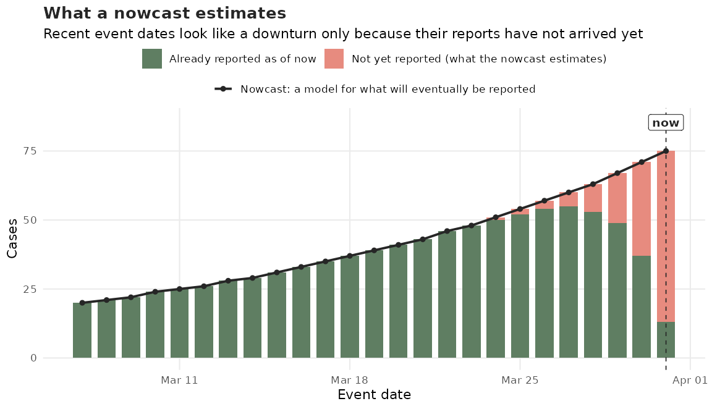
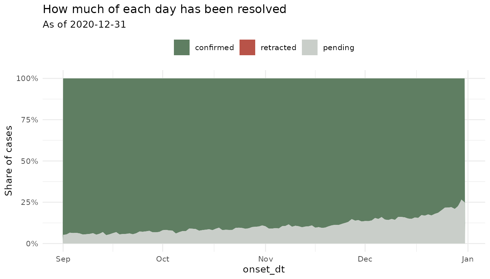
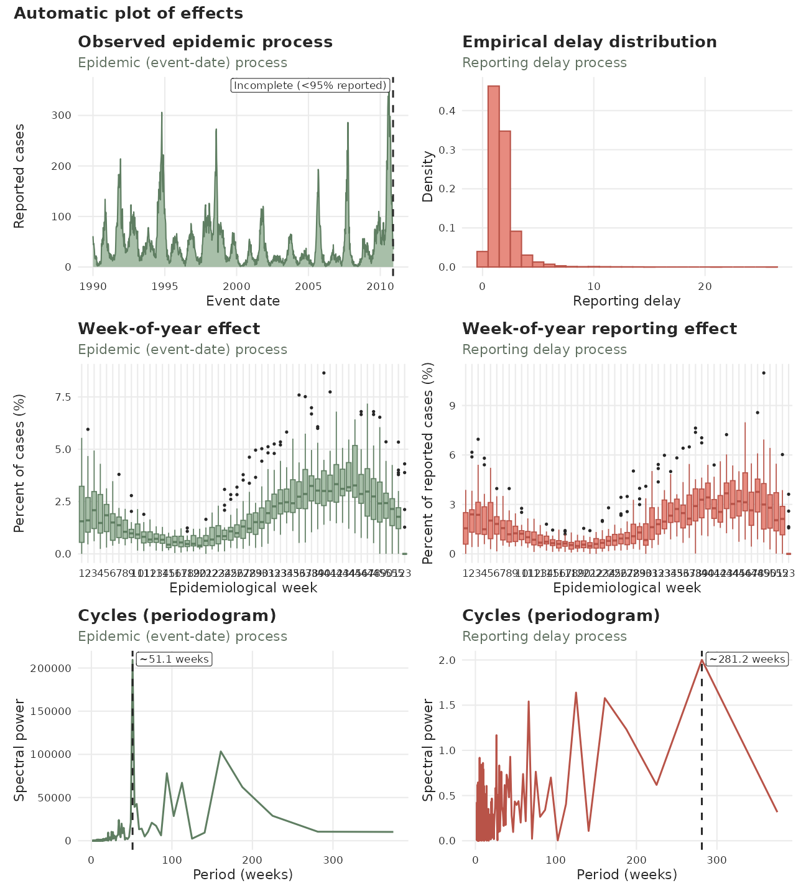
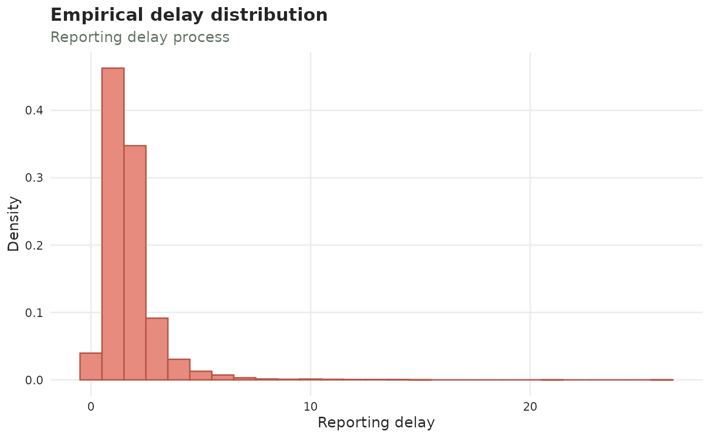
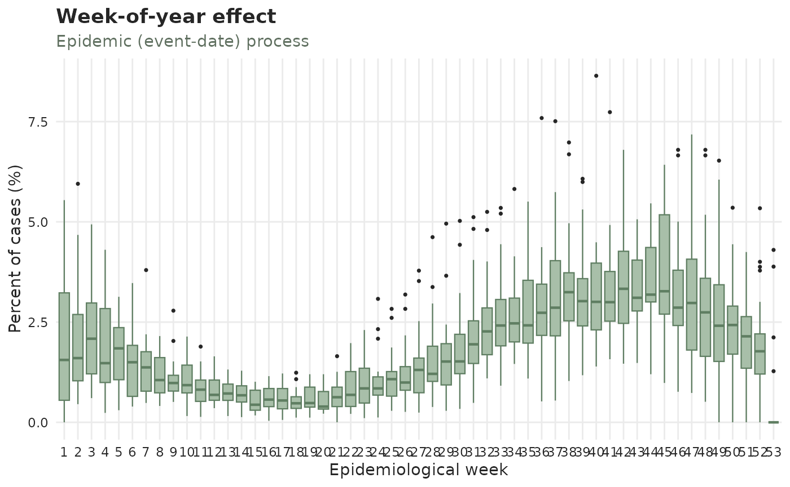
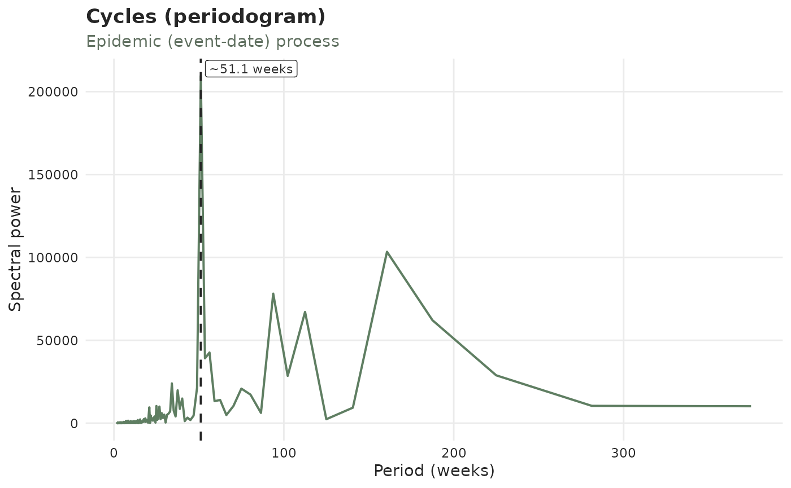
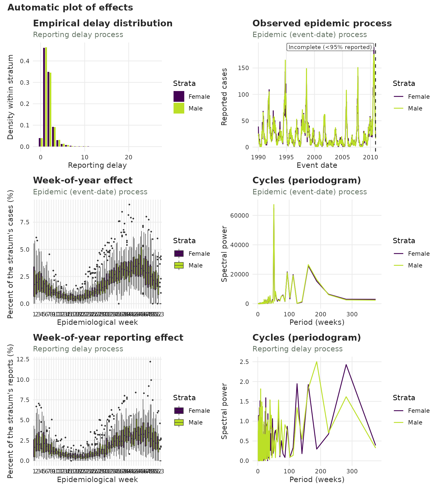
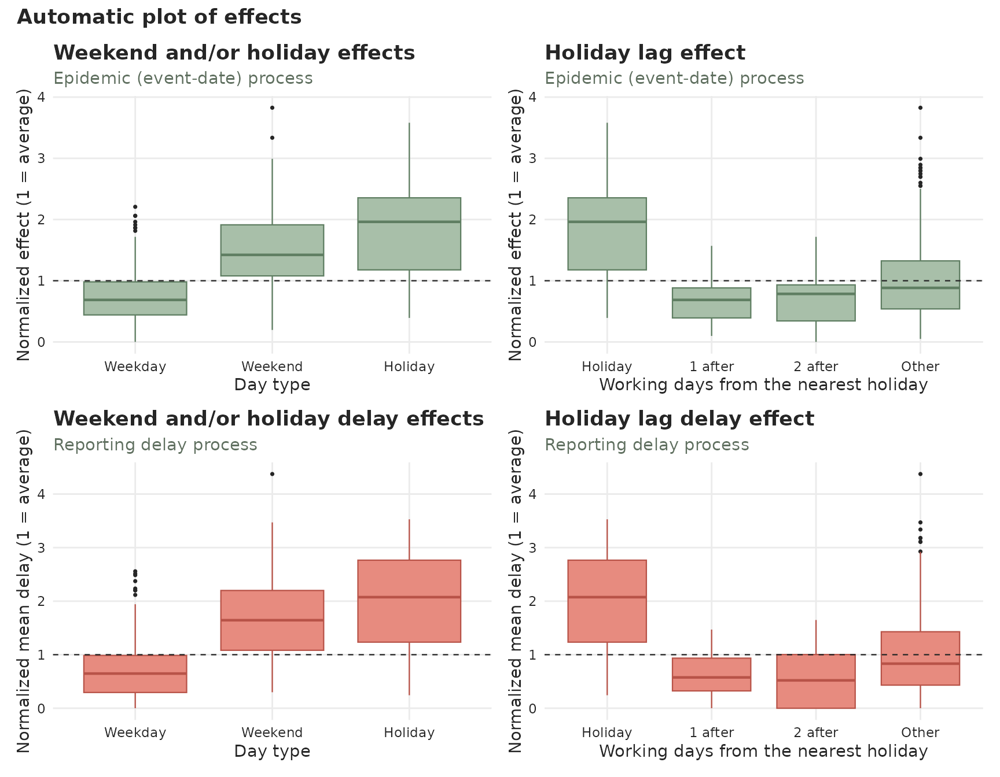
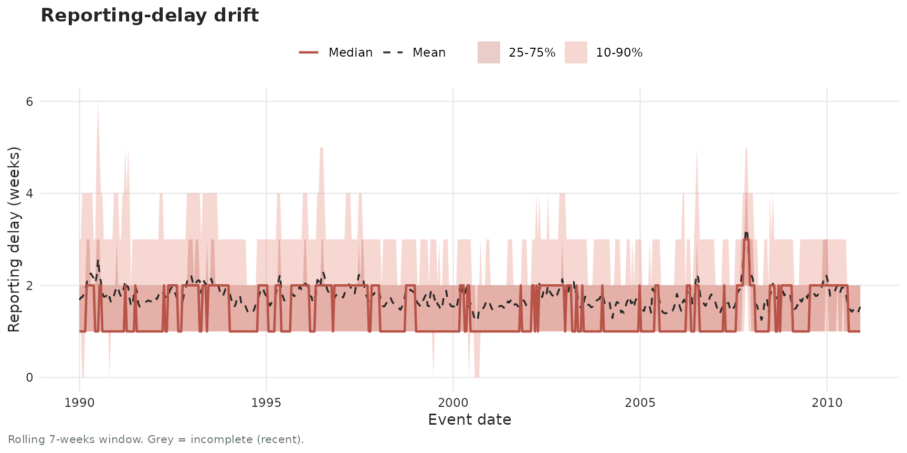

tbl.now
tbl.now.RmdIntroduction
The tidyverse ecosystem (Wickham et al. 2019) provides a widely adopted framework for data analysis. Within this paradigm, data is structured such that rows represent individual observations and columns represent variables. This approach is commonly referred to as tidy data (Wickham 2014).
Several tidyverse extensions exist for working with time series including tsibble, tibbletime, and timetk (Wang et al. 2020; Wang 2019; Dancho and Vaughan 2023). These packages provide time-aware tibbles and tools that integrate smoothly with the tidyverse. However, epidemiological nowcasting requires two time indices simultaneously: an event time and a reporting time. Classical time-series abstractions assume only a single index and therefore do not fully support this structure.
The tbl.now class and package addresses this gap. The
tbl.now extends a regular tibble() to explicitly encode
epidemiological event and report dates, allowing consistent data
transformation, delay computation, and integration with the diseasenowcasting
modeling workflow.
More concretely, tbl.now was designed to:
Standardize the data inputs required by diseasenowcasting models.
Preserve tidyverse compatibility so users can continue to apply familiar dplyr operations.
Diagnose reporting artefacts directly from the data (such as reporting-delay drift and change points) as well as batch (backlog) reporting.
Facilitate integration into iterative modeling workflows with different nowcasting packages (Gelman et al. 2020; Wickham et al. 2023):
Data Cleaning -> Modeling -> New Data Cleaning -> New Modeling -> ...We’ll begin by loading the required packages:
How tbl.now works
In an epidemiological nowcast, we typically observe at least two key dates1:
event_date: when the underlying event occurred (e.g., symptom onset, exposure, sample collection).report_date: when the event was recorded in the data system (e.g., lab result processed, clinical visit documented).
The nowcasting task is:
To estimate, for each past
event_date, how many events (e.g. cases) have already occurred but have not yet been reported as of now. That is, the nowcast will predict how many observations will eventually be observed for each (past or present)event_date.
Visually:

In the figure above, the green bars represent the number of cases (events) that have been observed until now; the pale red segments are the reports still in transit. Because completeness decays sharply over the most recent event dates, the observed counts bend downwards near the right edge even though the epidemic is still growing. The nowcast is the red line: an estimate of the height each bar will eventually reach.
A tbl.now object is a specialized tibble() that:
Identifies the
event_dateandreport_datecolumns.Stores these as
attributes()to enable consistent processing.Automatically computes auxiliary fields such as delay, numerical indices, and frequency units.
Ensures the dataset is correctly formatted for diseasenowcasting models.
Example: A simple tbl.now
Consider the following dataset:
| symptom_onset | medical_visit | n |
|---|---|---|
| 2023-12-25 | 2023-12-26 | 10 |
| 2023-12-26 | 2023-12-26 | 2 |
| 2023-12-25 | 2023-12-27 | 5 |
| 2023-12-26 | 2023-12-27 | 11 |
Where:
symptom_onsetis theevent_date.medical_visitis thereport_date.nis the number of reported cases for each event–report combination.
We can convert this into a tbl_now()
by first creating a data.frame and then using the
tbl_now() function:
#Create a data.frame
df <- data.frame(
symptom_onset = c(ymd("2023/12/25"), ymd("2023/12/26"),
ymd("2023/12/25"), ymd("2023/12/26")),
medical_visit = c(ymd("2023/12/26"), ymd("2023/12/26"),
ymd("2023/12/27"), ymd("2023/12/27")),
n = c(10, 2, 5, 11)
)
#Convert to tbl.now
df |>
tbl_now(event_date = symptom_onset, report_date = medical_visit, case_count = n)
#> ℹ Identified data as <count-incidence> with counts in column "n".
#> # A tibble: 4 × 6
#> # Data type: "count-incidence"
#> # Frequency: Event: `days` | Report: `days`
#> symptom_onset medical_visit n .event_num .report_num .delay
#> <date> <date> <dbl> <dbl> <dbl> <dbl>
#> [event_date] [report_date] [cases] [...] [...] [...]
#> 1 2023-12-25 2023-12-26 10 0 1 1
#> 2 2023-12-26 2023-12-26 2 1 1 0
#> 3 2023-12-25 2023-12-27 5 0 2 2
#> 4 2023-12-26 2023-12-27 11 1 2 1
#> # ────────────────────────────────────────────────────────────────────────────────
#> # Now: 2023-12-27 | Event date: "symptom_onset" | Report date: "medical_visit"
#> # ────────────────────────────────────────────────────────────────────────────────This performs several operations automatically:
Detects the data type (
count-incidencein this example). See below for all the data types available.Infers the frequency units of event and report dates (daily).
Tags the correct columns as
event_date,report_date, andcase_count.Computes
.event_num,.report_num, and.delaycolumns the numerical versions (indexed at 0) of event, report and.delay = report_date - event_datecolumns.Identifies the appropriate now date (the most recent report date).
The remaining sections describe these features and the broader
tbl.now toolkit.
Attributes of a tbl_now()
A tbl_now()
stores information about its structure using object attributes, ensuring
consistent behavior across dplyr transformations. The
primary attributes are:
now: the “current” reporting date used for nowcasting, typically the most recent
report_date.event_date: the column name storing event dates.
report_date: the column name storing report dates.
event_units: the temporal units for event dates (e.g., “days”, “weeks”, “numeric”).
report_units: the temporal units for report dates.
-
data_type: one of the following (see the data types section):
-
"linelist": each row is an individual observation -
"count-incidence": each row contains counts. Those counts represent the exact number of events observed for each event-report date combination. -
"count-cumulative": each row contains cumulative counts. Those counts represent the cumulative number of events observed by each report date for that event. Later report dates accumulate the earlier ones into the count.
-
strata (optional)2: variables for which the nowcast should be computed separately (e.g., age group, sex).
covariates (optional): predictor variables that may improve the nowcast (e.g., weather covariates).
is_censored_report (optional): identifies cases where the report date represents not the exact date it was reported but an upper limit to that exact date (i.e. left-censored). As an example, one can consider a system error and reports from a lab are not registered until a week after.
is_censored_validation (optional): the same flag on the validation axis. It marks rows whose validation delay – the time from report to resolution – is a bound rather than a measurement. See the validation process section.
validation_levels (optional): a named dictionary translating the labels in
validation_typeinto the four values that column may hold. Surveillance data is not always recorded in English, and this is howc(confirmado = "confirmed")becomes"confirmed"once rather than in every script that touches the data.case_count (optional): the column storing case counts when the dataset is aggregated.
temporal_effects (optional): a lazy specification for temporal effects such as day of the week, holiday, week of the year and other temporal effects. See the temporal effects section for more details.
You can access any attribute using the corresponding getter, e.g. get_event_date() or get_strata().
Below we provide more information on some of the attributes.
Data types
A tbl_now() can represent one of three data structures:
- Linelist: Each row corresponds to a single reported observation.
| patient | event_date | report_date |
|---|---|---|
| 1 | 2020-09-12 | 2020-09-12 |
| 2 | 2020-09-12 | 2020-09-12 |
| 3 | 2020-09-12 | 2020-09-13 |
| 4 | 2020-09-13 | 2020-09-13 |
| 5 | 2020-09-13 | 2020-09-13 |
| 6 | 2020-09-13 | 2020-09-13 |
-
Count-incidence: Each row summarizes how many
events with a given
event_datewere reported exactly on thatreport_date.
| n | event_date | report_date |
|---|---|---|
| 7 | 2020-09-12 | 2020-09-12 |
| 1 | 2020-09-12 | 2020-09-13 |
| 9 | 2020-09-12 | 2020-09-14 |
| 5 | 2020-09-13 | 2020-09-13 |
| 0 | 2020-09-13 | 2020-09-14 |
| 2 | 2020-09-13 | 2020-09-15 |
-
Count-cumulative Each row summarizes how many
events with a given
event_datehad been reported up to and including thatreport_date. The distinction is crucial for nowcasting models that operate either on daily increments or cumulative totals.
| n | event_date | report_date |
|---|---|---|
| 1 | 2020-09-12 | 2020-09-12 |
| 5 | 2020-09-12 | 2020-09-13 |
| 8 | 2020-09-12 | 2020-09-14 |
| 2 | 2020-09-13 | 2020-09-13 |
| 2 | 2020-09-13 | 2020-09-14 |
| 4 | 2020-09-13 | 2020-09-15 |
The to_count() function allows you to convert between
different data-types as we see below:
Converting Between Data Types
The to_count() function supports structured transformations. Here we start with linelist data as an example:
#The original data.frame has one row per patient
df_linelist <- data.frame(
patient = 1:6,
event_date = c(rep(ymd("2020/09/12"), 3), rep(ymd("2020/09/13"), 3)),
report_date = c(rep(ymd("2020/09/12"), 2), rep(ymd("2020/09/13"), 4))
)
#We can convert it to a tbl.now
df_linelist <- df_linelist |>
tbl_now(event_date = event_date, report_date = report_date,
data_type = "linelist")
#This is what it looks like
df_linelist
#> # A tibble: 6 × 6
#> # Data type: "linelist"
#> # Frequency: Event: `days` | Report: `days`
#> patient event_date report_date .event_num .report_num .delay
#> <int> <date> <date> <dbl> <dbl> <dbl>
#> [...] [event_date] [report_date] [...] [...] [...]
#> 1 1 2020-09-12 2020-09-12 0 0 0
#> 2 2 2020-09-12 2020-09-12 0 0 0
#> 3 3 2020-09-12 2020-09-13 0 1 1
#> 4 4 2020-09-13 2020-09-13 1 1 0
#> 5 5 2020-09-13 2020-09-13 1 1 0
#> 6 6 2020-09-13 2020-09-13 1 1 0
#> # ────────────────────────────────────────────────────────────────────────────────
#> # Now: 2020-09-13 | Event date: "event_date" | Report date: "report_date"
#> # ────────────────────────────────────────────────────────────────────────────────- Linelist → Count-Incidence: Aggregates by event–report date, counting only cases reported on that date.
df_linelist |>
to_count(to = "count-incidence")
#> # A tibble: 3 × 6
#> # Data type: "count-incidence"
#> # Frequency: Event: `days` | Report: `days`
#> event_date report_date .event_num .report_num n .delay
#> <date> <date> <dbl> <dbl> <int> <dbl>
#> [event_date] [report_date] [...] [...] [cases] [...]
#> 1 2020-09-12 2020-09-12 0 0 2 0
#> 2 2020-09-12 2020-09-13 0 1 1 1
#> 3 2020-09-13 2020-09-13 1 1 3 0
#> # ────────────────────────────────────────────────────────────────────────────────
#> # Now: 2020-09-13 | Event date: "event_date" | Report date: "report_date"
#> # ────────────────────────────────────────────────────────────────────────────────- Linelist → Count-Cumulative: Aggregates by event–report date, producing cumulative counts up to each report date.
df_linelist |>
to_count(to = "count-cumulative")
#> # A tibble: 3 × 6
#> # Data type: "count-cumulative"
#> # Frequency: Event: `days` | Report: `days`
#> event_date report_date .event_num .report_num n .delay
#> <date> <date> <dbl> <dbl> <int> <dbl>
#> [event_date] [report_date] [...] [...] [cases] [...]
#> 1 2020-09-12 2020-09-12 0 0 2 0
#> 2 2020-09-12 2020-09-13 0 1 3 1
#> 3 2020-09-13 2020-09-13 1 1 3 0
#> # ────────────────────────────────────────────────────────────────────────────────
#> # Now: 2020-09-13 | Event date: "event_date" | Report date: "report_date"
#> # ────────────────────────────────────────────────────────────────────────────────Note In the previous example the
ncounts3as it is aggregating the1observed atreport_date = 2020-09-13and the2observed atreport_date = 2020-09-12. This is the difference between the count-incidence that specifies the ones observed exactly on that date and the count-cumulative that specifies the ones observed up until and including that date.
- Count-Incidence → Count-Cumulative: Computes cumulative sums for each event date across report dates.
df_count_inc <- df_linelist |>
to_count(to = "count-incidence")
#This is count incidence:
df_count_inc
#> # A tibble: 3 × 6
#> # Data type: "count-incidence"
#> # Frequency: Event: `days` | Report: `days`
#> event_date report_date .event_num .report_num n .delay
#> <date> <date> <dbl> <dbl> <int> <dbl>
#> [event_date] [report_date] [...] [...] [cases] [...]
#> 1 2020-09-12 2020-09-12 0 0 2 0
#> 2 2020-09-12 2020-09-13 0 1 1 1
#> 3 2020-09-13 2020-09-13 1 1 3 0
#> # ────────────────────────────────────────────────────────────────────────────────
#> # Now: 2020-09-13 | Event date: "event_date" | Report date: "report_date"
#> # ────────────────────────────────────────────────────────────────────────────────
#Turns to count cumulative:
df_count_inc |>
to_count(to = "count-cumulative")
#> # A tibble: 3 × 6
#> # Data type: "count-cumulative"
#> # Frequency: Event: `days` | Report: `days`
#> event_date report_date .event_num .report_num n .delay
#> <date> <date> <dbl> <dbl> <int> <dbl>
#> [event_date] [report_date] [...] [...] [cases] [...]
#> 1 2020-09-12 2020-09-12 0 0 2 0
#> 2 2020-09-12 2020-09-13 0 1 3 1
#> 3 2020-09-13 2020-09-13 1 1 3 0
#> # ────────────────────────────────────────────────────────────────────────────────
#> # Now: 2020-09-13 | Event date: "event_date" | Report date: "report_date"
#> # ────────────────────────────────────────────────────────────────────────────────- Aggregation within the same type: The to_count() may also be used to re-aggregate datasets that contain duplicate event–report pairs. This is useful when raw surveillance feeds contain repeated entries such as in this case:
tbl_example <- data.frame(
n = c(8, 11, 0, 1, 1, 5, 2, 4, 1, 10, 9, 11, 3, 1),
sex = c(rep("M", 3), rep("F", 4), rep("M", 2), rep("F", 5)),
event_date = c(
rep(ymd("2020/09/12"), 3),
rep(ymd("2020/09/12"), 4),
rep(ymd("2020/09/13"), 2),
rep(ymd("2020/09/13"), 5)
),
report_date = c(
ymd("2020/09/12"), ymd("2020/09/13"), ymd("2020/09/14"),
ymd("2020/09/12"), ymd("2020/09/13"), ymd("2020/09/14"),
ymd("2020/09/15"), ymd("2020/09/13"), ymd("2020/09/14"),
ymd("2020/09/13"), ymd("2020/09/14"),
ymd("2020/09/15"), ymd("2020/09/16"), ymd("2020/09/17")
)) |>
tbl_now(
event_date = event_date, report_date = report_date,
data_type = "count-incidence", case_count = n, verbose = FALSE,
warn_non_uniqueness = FALSE
)
tbl_example
#> # A tibble: 14 × 7
#> # Data type: "count-incidence"
#> # Frequency: Event: `days` | Report: `days`
#> n sex event_date report_date .event_num .report_num .delay
#> <dbl> <chr> <date> <date> <dbl> <dbl> <dbl>
#> [cases] [...] [event_date] [report_date] [...] [...] [...]
#> 1 8 M 2020-09-12 2020-09-12 0 0 0
#> 2 11 M 2020-09-12 2020-09-13 0 1 1
#> 3 0 M 2020-09-12 2020-09-14 0 2 2
#> 4 1 F 2020-09-12 2020-09-12 0 0 0
#> 5 1 F 2020-09-12 2020-09-13 0 1 1
#> 6 5 F 2020-09-12 2020-09-14 0 2 2
#> 7 2 F 2020-09-12 2020-09-15 0 3 3
#> 8 4 M 2020-09-13 2020-09-13 1 1 0
#> 9 1 M 2020-09-13 2020-09-14 1 2 1
#> 10 10 F 2020-09-13 2020-09-13 1 1 0
#> 11 9 F 2020-09-13 2020-09-14 1 2 1
#> 12 11 F 2020-09-13 2020-09-15 1 3 2
#> 13 3 F 2020-09-13 2020-09-16 1 4 3
#> 14 1 F 2020-09-13 2020-09-17 1 5 4
#> # ────────────────────────────────────────────────────────────────────────────────
#> # Now: 2020-09-17 | Event date: "event_date" | Report date: "report_date"
#> # ────────────────────────────────────────────────────────────────────────────────This dataset intentionally contains repeated event_date–report_date
pairs for each sex. You can aggregate redundant rows with
the to_count()
function that collapses duplicates by summing the
case_count column.
tbl_example |>
to_count(to = "count-incidence")
#> # A tibble: 9 × 6
#> # Data type: "count-incidence"
#> # Frequency: Event: `days` | Report: `days`
#> event_date report_date .event_num .report_num n .delay
#> <date> <date> <dbl> <dbl> <dbl> <dbl>
#> [event_date] [report_date] [...] [...] [cases] [...]
#> 1 2020-09-12 2020-09-12 0 0 9 0
#> 2 2020-09-12 2020-09-13 0 1 12 1
#> 3 2020-09-12 2020-09-14 0 2 5 2
#> 4 2020-09-12 2020-09-15 0 3 2 3
#> 5 2020-09-13 2020-09-13 1 1 14 0
#> 6 2020-09-13 2020-09-14 1 2 10 1
#> 7 2020-09-13 2020-09-15 1 3 11 2
#> 8 2020-09-13 2020-09-16 1 4 3 3
#> 9 2020-09-13 2020-09-17 1 5 1 4
#> # ────────────────────────────────────────────────────────────────────────────────
#> # Now: 2020-09-17 | Event date: "event_date" | Report date: "report_date"
#> # ────────────────────────────────────────────────────────────────────────────────The function ensures that:
Rows are grouped by
event_date,report_date, and anystrata, andis_censored_report.The
case_countcolumn is summed within each group.Attributes are preserved so the resulting object remains a valid
tbl_now.
Temporal effects
Often, temporal covariates improve nowcasting performance by helping to adjust systematic changes within the calendar cycle (e.g., day-of-week effects, seasonal effects, or other reporting artefacts). The temporal_effects() function creates a specification (recipe) of the features to compute:
library(almanac)
t_eff <- temporal_effects(
day_of_week = TRUE,
week_of_year = TRUE,
holidays = cal_us_federal()
)
t_eff
#> ── Temporal Effects ────────────────────────────────────────────────────────────
#> The following effects are in place:
#> • "day_of_week"
#> • "week_of_year"
#> • "holidays":
#> New Year's Day, US Martin Luther King Jr. Day, US Presidents' Day, US Memorial Day, US Juneteenth, US Independence Day, US Labor Day, US Indigenous Peoples' Day, US Veterans Day, US Thanksgiving, and ChristmasNote that the holidays calendar is an rcalendar object from the almanac package.
How do thet work?
Temporal effects in tbl.now follow a lazy
evaluation pattern:
Add with add_temporal_effects() (or via the
t_effectsargument oftbl_now()). This records what should be computed but adds no columns yet.Materialise the columns with compute_temporal_effects() when you are ready to use them in a model.
data("denguedat")
# Step 1 — create the tbl_now and attach the spec (no columns added yet)
df_now <- denguedat |>
tbl_now(
event_date = onset_week, report_date = report_week,
verbose = FALSE, strata = gender
)
df_now <- df_now |>
add_temporal_effects(t_eff)
# The footer shows "T. effects (lazy): ..." — spec is recorded but not computed
df_now
#> # A tibble: 52,987 × 6
#> # Data type: "linelist"
#> # Frequency: Event: `weeks` | Report: `weeks`
#> onset_week report_week gender .event_num .report_num .delay
#> <date> <date> <chr> <dbl> <dbl> <dbl>
#> [event_date] [report_date] [strata] [...] [...] [...]
#> 1 1990-01-01 1990-01-01 Male 0 0 0
#> 2 1990-01-01 1990-01-01 Female 0 0 0
#> 3 1990-01-01 1990-01-01 Female 0 0 0
#> 4 1990-01-01 1990-01-08 Female 0 1 1
#> 5 1990-01-01 1990-01-08 Male 0 1 1
#> 6 1990-01-01 1990-01-15 Female 0 2 2
#> 7 1990-01-01 1990-01-15 Female 0 2 2
#> 8 1990-01-01 1990-01-15 Female 0 2 2
#> 9 1990-01-01 1990-01-22 Female 0 3 3
#> 10 1990-01-01 1990-01-08 Female 0 1 1
#> # ────────────────────────────────────────────────────────────────────────────────
#> # Now: 2010-12-20 | Event date: "onset_week" | Report date: "report_week"
#> # Strata: "gender"
#> # T. effects (lazy): [event_date] day_of_week, week_of_year, holidays
#> # ────────────────────────────────────────────────────────────────────────────────
#> # ℹ 52,977 more rowsThe footer now shows the spec with (lazy) to signal that
the columns have not been computed yet. No new columns appear in the
tibble at this point. When we compute, they appear (scroll to the
right):
# Step 2 — materialise the columns when needed
df_computed <- compute_temporal_effects(df_now)
# Columns are now present and annotated [t_effect]
df_computed
#> # A tibble: 52,987 × 9
#> # Data type: "linelist"
#> # Frequency: Event: `weeks` | Report: `weeks`
#> onset_week report_week gender .event_num .report_num .delay
#> <date> <date> <chr> <dbl> <dbl> <dbl>
#> [event_date] [report_date] [strata] [...] [...] [...]
#> 1 1990-01-01 1990-01-01 Male 0 0 0
#> 2 1990-01-01 1990-01-01 Female 0 0 0
#> 3 1990-01-01 1990-01-01 Female 0 0 0
#> 4 1990-01-01 1990-01-08 Female 0 1 1
#> 5 1990-01-01 1990-01-08 Male 0 1 1
#> 6 1990-01-01 1990-01-15 Female 0 2 2
#> 7 1990-01-01 1990-01-15 Female 0 2 2
#> 8 1990-01-01 1990-01-15 Female 0 2 2
#> 9 1990-01-01 1990-01-22 Female 0 3 3
#> 10 1990-01-01 1990-01-08 Female 0 1 1
#> # ────────────────────────────────────────────────────────────────────────────────
#> # Now: 2010-12-20 | Event date: "onset_week" | Report date: "report_week"
#> # Strata: "gender"
#> # T. effects: [event_date] day_of_week, week_of_year, holidays
#> # T. effect cols: ".event_day_of_week", ".event_week_of_year", and
#> # ".event_holiday"
#> # ────────────────────────────────────────────────────────────────────────────────
#> # ℹ 52,977 more rows
#> # ℹ 3 more variables: .event_day_of_week <fct>, .event_week_of_year <fct>,
#> # .event_holiday <int>After compute_temporal_effects():
- The effect columns (
.event_day_of_week,.event_week_of_year,.event_holiday) are added. - The function
get_temporal_effect_cols()lists the column names while - The original call remains accessible via
get_temporal_effects(), so you always know which effects were requested even after further dplyr operations.
get_temporal_effects(df_computed) # The spec (list of configs)
#> [[1]]
#> [[1]]$t_effects
#> ── Temporal Effects ────────────────────────────────────────────────────────────
#> The following effects are in place:
#> • "day_of_week"
#> • "week_of_year"
#> • "holidays":
#> New Year's Day, US Martin Luther King Jr. Day, US Presidents' Day, US Memorial Day, US Juneteenth, US Independence Day, US Labor Day, US Indigenous Peoples' Day, US Veterans Day, US Thanksgiving, and Christmas
#>
#> [[1]]$date_type
#> [1] "event_date"
#>
#> [[1]]$weekend_days
#> [1] "Sat" "Sun"
get_temporal_effect_cols(df_computed) # The computed column names
#> [1] ".event_day_of_week" ".event_week_of_year" ".event_holiday"Around-holiday and around-weekend effects
Reporting often rebounds on the first working day(s) after a
holiday or a weekend. To capture that, temporal_effects()
has holiday_lags and weekend_lags: each takes
a depth N and creates indicator columns
..._holiday_lag_1 … ..._holiday_lag_N (and
..._weekend_lag_k) that flag dates falling exactly
k working days after a holiday / weekend.
Working days skip weekends and other holidays, so the effect lands on
the first day back at work.
# Flag the two working days after a holiday, and the working day after a weekend
after_eff <- temporal_effects(
holidays = cal_us_federal(),
holiday_lags = 2,
weekend_lags = 1
)
after_eff
#> ── Temporal Effects ────────────────────────────────────────────────────────────
#> The following effects are in place:
#> • "after-holiday" effect: first 2 working days
#> • "after-weekend" effect: first working day
#> • "holidays":
#> New Year's Day, US Martin Luther King Jr. Day, US Presidents' Day, US Memorial Day, US Juneteenth, US Independence Day, US Labor Day, US Indigenous Peoples' Day, US Veterans Day, US Thanksgiving, and ChristmasThe mirror image — a slowdown in the days leading up to a
break — is a negative depth. ..._holiday_lead_k /
..._weekend_lead_k then flag dates k working
days before a holiday / weekend, counting backwards
from it, so _lead_1 is the working day closest to the
break:
# Flag Christmas Eve (and the eve of every other holiday), plus the Wednesday,
# Thursday and Friday before each weekend
before_eff <- temporal_effects(
holidays = cal_us_federal(),
holiday_lags = -1,
weekend_lags = -3
)
before_eff
#> ── Temporal Effects ────────────────────────────────────────────────────────────
#> The following effects are in place:
#> • "before-holiday" effect: last working day
#> • "before-weekend" effect: last 3 working days
#> • "holidays":
#> New Year's Day, US Martin Luther King Jr. Day, US Presidents' Day, US Memorial Day, US Juneteenth, US Independence Day, US Labor Day, US Indigenous Peoples' Day, US Veterans Day, US Thanksgiving, and ChristmasTo model both sides of the same break, attach one specification per direction:
df_now |>
add_temporal_effects(temporal_effects(weekend_lags = -1)) |> # the Friday before
add_temporal_effects(temporal_effects(weekend_lags = 1)) # the Monday afterEvent- vs report-date effects
By default effects are derived from the event date
and named .event_*. Pass
date_type = "report_date" to
add_temporal_effects() to derive them from the
report date instead (columns named
.report_*). Both can coexist on the same
tbl_now, and every converter carries both sets of
columns.
df_now |>
add_temporal_effects(temporal_effects(week_of_year = TRUE), date_type = "event_date") |>
add_temporal_effects(temporal_effects(day_of_week = TRUE), date_type = "report_date")The validation process
Some surveillance systems have a third date. A case is not only reported – it is later resolved: a laboratory issues the result that confirms it, or rules it out. Influenza is the standard picture: symptoms begin (the event), the patient visits a doctor (the report), and days later a swab comes back positive (the validation) or negative (a retraction – the case was reported but is not a case after all).
A tbl_now can carry this with
validation_date, an optional validation_type,
and its own validation_units. The timeline it assumes
is
\text{event date} \le \text{report date} \le \text{validation date} \le \text{now}
validation_type takes the values
"confirmed", "retracted",
"pending" or NA, and nothing
else. Pending is the important one: it means
the case has been reported and is still waiting for a result, so it has
no validation date. That is a different thing from a case whose
result you simply never recorded, which is NA.
We will use covid_us, the CDC’s COVID-19 case
surveillance data for 2020, which records all three dates: when symptoms
began, when the first positive specimen was collected, and when the case
was registered at CDC with a status.
data("covid_us")
head(covid_us, 3)
#> onset_dt pos_spec_dt cdc_report_dt current_status sex n
#> 1 2020-01-01 2020-01-01 2020-01-01 Probable Case Female 1
#> 2 2020-01-01 2020-03-25 2020-09-05 Laboratory-confirmed case Female 1
#> 3 2020-01-01 2020-03-27 2020-05-13 Laboratory-confirmed case Female 1
table(covid_us$current_status)
#>
#> Laboratory-confirmed case Probable Case
#> 165663 27290
validation_levels: getting other people’s words into
those four
CDC does not say "confirmed"; it says
"Laboratory-confirmed case". Recoding that by hand before
every call is the kind of step that gets forgotten in one script out of
five, so the object does it once. validation_levels is a
named vector whose names are the labels in your data
and whose values are the canonical outcomes:
covid_now <- covid_us |>
filter(onset_dt >= as.Date("2020-09-01")) |>
tbl_now(
event_date = onset_dt, # symptoms began
report_date = pos_spec_dt, # the first positive specimen
validation_date = cdc_report_dt, # the case was registered at CDC
validation_type = current_status,
validation_levels = c(
"Laboratory-confirmed case" = "confirmed",
"Probable Case" = "pending"
),
case_count = n,
strata = sex,
data_type = "count-incidence",
verbose = FALSE
)
table(covid_now$current_status)
#>
#> confirmed pending
#> 55354 20269
get_validation_levels(covid_now)
#> Laboratory-confirmed case Probable Case
#> "confirmed" "pending"The column now holds the canonical values, and the dictionary is kept
on the object so you can still see what the data said. The same works
for data recorded in another language:
c(confirmado = "confirmed", retractado = "retracted", pendiente = "pending").
Anything the dictionary does not name, and that is not already one of
the four, is an error rather than a silently accepted category.
A note on this particular dataset: CDC never withdraws a case, so
"retracted" does not occur in covid_us. It is
a two-outcome validation process.
covid_now
#> # A tibble: 75,623 × 11
#> # Data type: "count-incidence"
#> # Frequency: Event: `days` | Report: `days`
#> onset_dt pos_spec_dt cdc_report_dt current_status sex n .event_num
#> <date> <date> <date> <chr> <chr> <int> <dbl>
#> [event_date] [report_dat… [validation_… [validation_t… [str… [cas… [...]
#> 1 2020-09-01 2020-09-01 2020-09-01 confirmed Fema… 80 0
#> 2 2020-09-01 2020-09-01 2020-09-01 confirmed Male 50 0
#> 3 2020-09-01 2020-09-01 2020-09-01 confirmed Unkn… 5 0
#> 4 2020-09-01 2020-09-01 2020-09-01 pending Fema… 2 0
#> 5 2020-09-01 2020-09-01 2020-09-01 pending Male 1 0
#> 6 2020-09-01 2020-09-01 2020-09-02 confirmed Fema… 58 0
#> 7 2020-09-01 2020-09-01 2020-09-02 confirmed Male 44 0
#> 8 2020-09-01 2020-09-01 2020-09-02 pending Fema… 1 0
#> 9 2020-09-01 2020-09-01 2020-09-02 pending Male 3 0
#> 10 2020-09-01 2020-09-01 2020-09-03 confirmed Fema… 104 0
#> # ────────────────────────────────────────────────────────────────────────────────
#> # Now: 2020-12-31 | Event date: "onset_dt" | Report date: "pos_spec_dt"
#> # Validation date: "cdc_report_dt" ("days") | resolved: 55354/75623
#> # Strata: "sex"
#> # ────────────────────────────────────────────────────────────────────────────────
#> # ℹ 75,613 more rows
#> # ℹ 4 more variables: .report_num <dbl>, .delay <dbl>, .validation_num <dbl>,
#> # .validation_delay <dbl>The footer now carries a validation line – the column, its units, and
how many cases have actually been resolved. Two derived columns appear
alongside .delay: .validation_num (the
validation date on the same numeric grid as the other dates) and
.validation_delay, the laboratory’s
turnaround – the time from report to result, which is a
different quantity from the reporting delay.
# Reporting delay: onset to positive specimen.
median(covid_now$.delay, na.rm = TRUE)
#> [1] 4
# Turnaround: specimen to registration at CDC.
median(covid_now$.validation_delay, na.rm = TRUE)
#> [1] 6Validation also moves now. A result issued on a date
means you were, by definition, still observing the system on that date,
so now is never earlier than the last validation – even
when reporting stopped before it.
get_now(covid_now)
#> [1] "2020-12-31"
get_validation_units(covid_now)
#> [1] "days"
has_validation(covid_now)
#> [1] TRUEIt also moves backwards correctly. change_now()
is how you ask what the data looked like at an earlier moment – the loop
a backtest walks – and a validation dated after that moment has simply
not happened yet, so it reverts to "pending" with its date
masked rather than making the object invalid:
as_of_october <- change_now(covid_now, as.Date("2020-10-15"), verbose = FALSE)
#> Warning: Attribute 'now' (2020-10-15) seems to be in the past (before maximum
#> report_date (2020-12-31))
#> ℹ Set it with `change_now()`, or let `update_now()` take the maximum.
get_now(as_of_october)
#> [1] "2020-10-15"
sum(as_of_october$n[as_of_october$current_status == "pending"])
#> [1] 775645Counting cases when some of them can be undone
Once cases can be retracted, “how many cases were there?” has more than one answer, and the right one depends on the question:
head(get_latest_confirmed(covid_now), 3) # cases the laboratory confirmed
#> # A tibble: 3 × 3
#> onset_dt sex n
#> <date> <chr> <dbl>
#> 1 2020-09-01 Female 1753
#> 2 2020-09-01 Male 1507
#> 3 2020-09-01 Missing 1
head(get_net_confirmed(covid_now), 3) # confirmed minus retracted
#> # A tibble: 3 × 3
#> onset_dt sex n
#> <date> <chr> <dbl>
#> 1 2020-09-01 Female 1753
#> 2 2020-09-01 Male 1507
#> 3 2020-09-01 Missing 1get_nth_confirmed(x, delay) counts only the cases
resolved within a given number of periods – what you would have
known that soon after the report – and
get_initial_confirmed() is the same-period case. These
mirror get_nth_reported_cases() and
get_initial_reported_cases() on the report axis.
Validation delays you do not believe
If your data records absurdly long validation delays – a result
“issued” two years later is usually a data-entry artefact, not a
laboratory – censor_validation_delays_above() marks them
with the is_censored_validation flag. It
is the validation-axis twin of is_censored_report, and it
works the same way: the case and its date are kept, and the
delay is recorded as a bound rather than a measurement, for
models that can use censored observations.
capped <- censor_validation_delays_above(covid_now, max_delay = 60, verbose = FALSE)
get_is_censored_validation(capped)
#> [1] ".is_censored_validation"
sum(capped$n[capped[[get_is_censored_validation(capped)]]])
#> [1] 2286Nothing is deleted and no outcome is rewritten, so
get_latest_confirmed() still counts those cases. Set the
flag by hand with add_is_censored_validation() when your
data already carries one.
How much of the epidemic has been resolved?
plot_validation_status() shows the share of cases
confirmed, retracted and pending over time. A pending share that grows
towards the right-hand edge is normal – recent cases have not had time
to come back from the laboratory – but a pending share that grows in the
middle of the series is a laboratory falling behind.
plot_validation_status(covid_now)
The validation axis
Every reporting diagnostic in the package asks one question: did an
unusual number of records arrive on this date, and with what delay? That
question is just as meaningful for results arriving from a laboratory,
so the diagnostics take an axis argument instead of being
duplicated:
# The same picture, drawn for the laboratory instead of the surveillance desk.
plot_reporting_triangle(covid_now, axis = "validation")
plot_delay_profiles(covid_now, axis = "validation")
plot_delay_drift(covid_now, axis = "validation")
diagnostic_plot(covid_now, axis = "validation")
# A laboratory clearing a backlog is a batch, exactly as a surveillance system
# clearing its inbox is.
diagnose_batches(covid_now, axis = "validation")Two notes on what axis = "validation" means. Delays are
still measured from the event, so the report and
validation axes are directly comparable and the gap between them is the
time the laboratory adds. And cases that are still
"pending" are excluded: they have no validation date, so
counting them would invent an arrival on a date they do not have.
Finally, when a system produces both validations and retractions you
can ask whether they take equally long – a laboratory that rules cases
out faster than it confirms them will bias any nowcast that treats the
two alike. diagnose_validation_delay() tests exactly that
(a Wilcoxon rank-sum test on the two delay distributions) and
plot_validation_delay() draws it. covid_us
records no retractions, so there is nothing to compare here.
Getting, removing and changing attributes
A tbl_now()’s attributes can be modified using the functions in add_*, change_*, or remove_*. These functions share a consistent interface that allows users to incrementally manipulate strata, covariates, and temporal effects.
The example below demonstrates how to create a tbl_now(), add strata and temporal effects, later modify the strata, and finally remove the temporal effects.
data("mpoxdat")
df_now <- mpoxdat |>
tbl_now(
event_date = dx_date, report_date = dx_report_date,
case_count = n, verbose = FALSE, strata = race
)
df_now
#> # A tibble: 1,417 × 7
#> # Data type: "count-incidence"
#> # Frequency: Event: `days` | Report: `days`
#> dx_date dx_report_date race n .event_num .report_num .delay
#> <date> <date> <chr> <int> <dbl> <dbl> <dbl>
#> [event_date] [report_date] [strata] [cas… [...] [...] [...]
#> 1 2022-07-08 2022-07-12 Asian 4 0 4 4
#> 2 2022-07-08 2022-07-12 Black 6 0 4 4
#> 3 2022-07-08 2022-07-12 Hispanic 6 0 4 4
#> 4 2022-07-08 2022-07-12 Non-Hispanic… 6 0 4 4
#> 5 2022-07-08 2022-07-13 Asian 2 0 5 5
#> 6 2022-07-08 2022-07-13 Black 3 0 5 5
#> 7 2022-07-08 2022-07-13 Hispanic 8 0 5 5
#> 8 2022-07-08 2022-07-13 Non-Hispanic… 5 0 5 5
#> 9 2022-07-08 2022-07-14 Black 1 0 6 6
#> 10 2022-07-08 2022-07-14 Hispanic 3 0 6 6
#> # ────────────────────────────────────────────────────────────────────────────────
#> # Now: 2023-05-19 | Event date: "dx_date" | Report date: "dx_report_date"
#> # Strata: "race"
#> # ────────────────────────────────────────────────────────────────────────────────
#> # ℹ 1,407 more rowsYou can see that the strata is race with the
corresponding get_*:
get_strata(df_now)
#> [1] "race"Strata can be modified with the change_* family of functions. The following example adds a new column containing an uppercase version of the existing race variable and sets it as the new strata:
df_now <- df_now |>
mutate(RACE_UPPER = toupper(race)) |>
change_strata(RACE_UPPER)
get_strata(df_now)
#> [1] "RACE_UPPER"To attach a lazy temporal-effects spec, use add_temporal_effects(), then materialise with compute_temporal_effects():
df_now <- df_now |>
add_temporal_effects(temporal_effects(week_of_year = TRUE))
# Spec is stored (lazy):
get_temporal_effects(df_now)
#> [[1]]
#> [[1]]$t_effects
#> ── Temporal Effects ────────────────────────────────────────────────────────────
#> The following effects are in place:
#> • "week_of_year"
#>
#> [[1]]$date_type
#> [1] "event_date"
#>
#> [[1]]$weekend_days
#> [1] "Sat" "Sun"
# Compute to add columns:
df_now <- compute_temporal_effects(df_now)
get_temporal_effect_cols(df_now)
#> [1] ".event_week_of_year"Attributes can be removed using the corresponding remove_*
functions. remove_temporal_effects() drops both the spec
and any computed columns:
df_now <- df_now |>
remove_temporal_effects() |>
remove_all_strata()
#> Warning: *Non-unique*: 832 rows share an (dx_date, dx_report_date) combination.
#> ℹ 2 columns "race" and "RACE_UPPER" are not declared, so they split each cell
#> into several rows. Declare them with `strata = ` to model them separately, or
#> `to_count()` to pool them away. The `tbl_now_to_()` converters pool
#> undeclared columns for you, so this is a warning rather than an error.
df_now
#> # A tibble: 1,417 × 8
#> # Data type: "count-incidence"
#> # Frequency: Event: `days` | Report: `days`
#> dx_date dx_report_date race n .event_num .report_num .delay
#> <date> <date> <chr> <int> <dbl> <dbl> <dbl>
#> [event_date] [report_date] [...] [cas… [...] [...] [...]
#> 1 2022-07-08 2022-07-12 Asian 4 0 4 4
#> 2 2022-07-08 2022-07-12 Black 6 0 4 4
#> 3 2022-07-08 2022-07-12 Hispanic 6 0 4 4
#> 4 2022-07-08 2022-07-12 Non-Hispanic… 6 0 4 4
#> 5 2022-07-08 2022-07-13 Asian 2 0 5 5
#> 6 2022-07-08 2022-07-13 Black 3 0 5 5
#> 7 2022-07-08 2022-07-13 Hispanic 8 0 5 5
#> 8 2022-07-08 2022-07-13 Non-Hispanic… 5 0 5 5
#> 9 2022-07-08 2022-07-14 Black 1 0 6 6
#> 10 2022-07-08 2022-07-14 Hispanic 3 0 6 6
#> # ────────────────────────────────────────────────────────────────────────────────
#> # Now: 2023-05-19 | Event date: "dx_date" | Report date: "dx_report_date"
#> # ────────────────────────────────────────────────────────────────────────────────
#> # ℹ 1,407 more rows
#> # ℹ 1 more variable: RACE_UPPER <chr>
get_temporal_effects(df_now) # Empty list — no spec
#> list()
get_temporal_effect_cols(df_now) # character(0) — no computed cols
#> character(0)
get_strata(df_now)
#> NULLModifying a tbl_now() with dplyr
tbl_now() objects extend tibble(), and therefore support standard dplyr verbs. The class attempts to preserve and adapt its internal attributes when operations are performed. For example, renaming a strata column will automatically update the stored strata attribute.
library(dplyr, quietly = TRUE)
data(denguedat)
df_now <- tbl_now(denguedat,
event_date = onset_week,
report_date = report_week, strata = gender,
verbose = FALSE
)
# Current strata
get_strata(df_now)
#> [1] "gender"After renaming the column, the strata attribute updates accordingly:
df_now <- df_now |>
rename(male_or_female = gender)
get_strata(df_now)
#> [1] "male_or_female"Certain operations may cause a tbl_now() object to drop back to a standard tibble. This occurs when the operation removes necessary structure—for example, collapsing all data into a single row with summarise():
df_now |>
summarise(number_males = sum(male_or_female == "Male"))
#> Warning: Dropping `tbl_now` attributes and converting to `tibble`
#> # A tibble: 1 × 1
#> number_males
#> <int>
#> 1 26395Other operations like mutate and select work as long as the original columns and the required for the attributes are kept:
df_now <- df_now |>
mutate(GENDER = toupper(male_or_female)) |>
select(GENDER, everything())
df_now
#> # A tibble: 52,987 × 7
#> # Data type: "linelist"
#> # Frequency: Event: `weeks` | Report: `weeks`
#> GENDER onset_week report_week male_or_female .event_num .report_num .delay
#> <chr> <date> <date> <chr> <dbl> <dbl> <dbl>
#> [...] [event_date] [report_dat… [strata] [...] [...] [...]
#> 1 MALE 1990-01-01 1990-01-01 Male 0 0 0
#> 2 FEMALE 1990-01-01 1990-01-01 Female 0 0 0
#> 3 FEMALE 1990-01-01 1990-01-01 Female 0 0 0
#> 4 FEMALE 1990-01-01 1990-01-08 Female 0 1 1
#> 5 MALE 1990-01-01 1990-01-08 Male 0 1 1
#> 6 FEMALE 1990-01-01 1990-01-15 Female 0 2 2
#> 7 FEMALE 1990-01-01 1990-01-15 Female 0 2 2
#> 8 FEMALE 1990-01-01 1990-01-15 Female 0 2 2
#> 9 FEMALE 1990-01-01 1990-01-22 Female 0 3 3
#> 10 FEMALE 1990-01-01 1990-01-08 Female 0 1 1
#> # ────────────────────────────────────────────────────────────────────────────────
#> # Now: 2010-12-20 | Event date: "onset_week" | Report date: "report_week"
#> # Strata: "male_or_female"
#> # ────────────────────────────────────────────────────────────────────────────────
#> # ℹ 52,977 more rowsUpdating a tbl_now()
A tbl_now() object can be updated using the update() method with another data.frame, tibble, or tbl_now() as input. When the column structure is compatible, the update process retains the strata, covariate, and temporal-effect attributes from the original object, and recalculates “now” estimates using the combined data.
Below is an example using an initial dataset:
df <- data.frame(
patient = 1:6,
event_date = c(rep(ymd("2020/09/12"), 3), rep(ymd("2020/09/13"), 3)),
report_date = c(
ymd("2020/09/12"), ymd("2020/09/13"), ymd("2020/09/14"),
ymd("2020/09/13"), ymd("2020/09/14"), ymd("2020/09/15")
)
)
df_now <- tbl_now(df,
event_date = event_date,
report_date = report_date, verbose = FALSE
)And a follow-up dataset containing newly reported cases:
df_new <- data.frame(
patient = 7:13,
event_date = c(
ymd("2020/09/13"),
rep(ymd("2020/09/14"), 3),
rep(ymd("2020/09/15"), 3)
),
report_date = c(
ymd("2020/09/14"), ymd("2020/09/14"), ymd("2020/09/15"),
ymd("2020/09/16"), ymd("2020/09/15"), ymd("2020/09/16"),
ymd("2020/09/17")
)
)We can update the original object by incorporating the new data:
df_updated <- update(df_now, new_data = df_new)
df_updated
#> # A tibble: 13 × 6
#> # Data type: "linelist"
#> # Frequency: Event: `days` | Report: `days`
#> patient event_date report_date .event_num .report_num .delay
#> <int> <date> <date> <dbl> <dbl> <dbl>
#> [...] [event_date] [report_date] [...] [...] [...]
#> 1 1 2020-09-12 2020-09-12 0 0 0
#> 2 2 2020-09-12 2020-09-13 0 1 1
#> 3 3 2020-09-12 2020-09-14 0 2 2
#> 4 4 2020-09-13 2020-09-13 1 1 0
#> 5 5 2020-09-13 2020-09-14 1 2 1
#> 6 6 2020-09-13 2020-09-15 1 3 2
#> 7 7 2020-09-13 2020-09-14 1 2 1
#> 8 8 2020-09-14 2020-09-14 2 2 0
#> 9 9 2020-09-14 2020-09-15 2 3 1
#> 10 10 2020-09-14 2020-09-16 2 4 2
#> 11 11 2020-09-15 2020-09-15 3 3 0
#> 12 12 2020-09-15 2020-09-16 3 4 1
#> 13 13 2020-09-15 2020-09-17 3 5 2
#> # ────────────────────────────────────────────────────────────────────────────────
#> # Now: 2020-09-17 | Event date: "event_date" | Report date: "report_date"
#> # ────────────────────────────────────────────────────────────────────────────────Visualizing a tbl_now
The autoplot()
method gives a quick diagnostic overview of a tbl_now:
library(ggplot2)
library(patchwork)
dengue_now <- tbl_now(denguedat,
event_date = "onset_week",
report_date = "report_week",
verbose = FALSE
)
autoplot(dengue_now)
We explore each of the panels below
The delay distribution

Empirical delay distribution
The empirical delay distribution represents a case-count weighted histogram of the reporting delay.
The observed epidemic process
Observed epidemic process
The observed epidemic process represents the latest
reported counts per event_date.
The calendar effects

Day of the week and week of the year effects
These are boxplots of the percent effect by day of week / week of year / month. The plots shown are determined automatically by the units of the event and report dates.
The holiday effects
If holidays are included in the tbl_now() they show the
percent effects by day type (holiday or not) and by
position relative to the nearest holiday. See Holiday effects
The cycles

Periodogram showing the Fourier season’s dominant peak
The periodogram shows the dominant peak. This suggests a Fourier
season length to pass to temporal_effects().
For the weekly dengue data for example, the periodogram peaks near 52
weeks, suggesting an annual cycle. We could capture this with a Fourier
term of temporal_effects(seasons = 52).
The reporting delay panels reveal the same effects for the
report_delay.
Additional arguments for autoplot()
Set by_strata = TRUE to split every panel by stratum:
the boxplots become dodged boxes (one per stratum, side by side), the
epidemic process and periodograms become one coloured line per stratum,
and the delay distribution becomes dodged bars. The boxplots are then
normalized per stratum (1 = that stratum’s own average) so the
calendar pattern is comparable across strata. By default the object’s
strata are used; pass strata = "gender" to
group on a subset.
autoplot(dengue_now, strata = "gender", by_strata = TRUE)
One panel at a time: the plot_*() functions
autoplot() draws the whole grid in one call. When you
want a single effect on its own — in its own figure, at its own size —
every panel also has a standalone plot_*() twin. They take
the same object and return the identical plot, so
autoplot(x, panels = "calendar_weekday") and
plot_day_of_week_effects(x) are the same figure. Use
autoplot() for the overview; reach for a
plot_*() when you want to place one effect in a report.
Each calendar/holiday twin takes a type argument
choosing the process: type = "epidemic" (the default, green
— how the cases vary) or type = "report" (red —
how the reporting does).
| Function |
autoplot() panel |
|---|---|
plot_day_of_week_effects(x, type = ) |
calendar_weekday / delay_weekday
|
plot_week_of_year_effects(x, type = ) |
calendar_week / delay_week
|
plot_month_of_year_effects(x, type = ) |
calendar_month / delay_month
|
plot_holiday_effects(x, type = ) |
calendar_holiday / delay_holiday
|
plot_holiday_lag_effects(x, type = ) |
calendar_holiday_lag /
delay_holiday_lag
|
plot_cycles(x, type = ) |
seasonality / delay_seasonality
|
plot_delay_distribution(x) |
delay_distribution |
plot_observed_cases(x) |
epidemic |
# The same figure, two ways:
autoplot(dengue_now, panels = "calendar_week")
# The event effects:
plot_week_of_year_effects(dengue_now)
# The reporting twin (delay):
plot_week_of_year_effects(dengue_now, type = "report")Holiday effects
The holiday panels describe the temporal_effects()
attached. For them to appear you need to describe a
holidays calendar and/or holiday_lags. The
temporal effect is read directly, so there is no need to call
compute_temporal_effects() first.
Holidays are a daily phenomenon, so for this example we switch to daily data:
holiday_now <- tbl_now(reports,
event_date = onset, report_date = reported, case_count = n,
data_type = "count-incidence", verbose = FALSE
) |>
add_temporal_effects(
temporal_effects(weekend = TRUE, holidays = cal_us_federal(), holiday_lags = 2)
)
autoplot(holiday_now, panels = c("calendar_holiday", "calendar_holiday_lag",
"delay_holiday", "delay_holiday_lag"))
The holiday effect panel splits the days by
type. The categories you get follow the
temporal_effects(): a calendar plus
weekend = TRUE gives Weekday /
Weekend / Holiday; a calendar alone gives
Non-holiday / Holiday; a weekend effect alone
gives Weekday / Weekend. A holiday that falls
on a weekend counts as a holiday.
The holiday lag effect panel splits them by
position relative to the nearest holiday, showing exactly the
days that holiday_lags flags — "1 after",
"2 after", and so on, with "Other" (every
other day) as the reference to read them against. Negative depths add
"1 before", "2 before", … to the left of the
holiday, so the axis reads left-to-right as time does. Counting is in
working days, so weekends and other holidays are
skipped exactly as they are for the ..._holiday_lag_k
columns.
Describing and diagnosing a tbl_now
Two questions come up with every new object: what is in it, and what is wrong with it. summary() and diagnose() answer them. Both return a tibble rather than printed text, so their answers can be filtered, joined, plotted, or asserted on in a test.
What is in the data?
summary() stacks several blocks into one table.
component says which block a row belongs to:
summary(dengue_now) |>
count(component)
#> # A tibble: 6 × 2
#> component n
#> <chr> <int>
#> 1 autocorrelation 2
#> 2 cases 2
#> 3 completeness 8
#> 4 coverage 11
#> 5 delay 1
#> 6 zero_run 2The completeness block is often the most useful of them:
it says how much of each event date’s eventual total had arrived by
delay d, which is what decides how far back a nowcast is
even meaningful.
summary(dengue_now) |>
filter(component == "completeness") |>
select(quantity, n, mean, q50, prop) |>
head(4)
#> # A tibble: 4 × 5
#> quantity n mean q50 prop
#> <chr> <int> <dbl> <dbl> <dbl>
#> 1 delay <= 0 1090 0.0381 0.0220 0.0396
#> 2 delay <= 1 1090 0.510 0.510 0.502
#> 3 delay <= 2 1090 0.844 0.867 0.850
#> 4 delay <= 3 1090 0.931 0.953 0.941Half of a week’s cases are in by the end of the following week, and 94% by three weeks — so a nowcast reaching further back than about three weeks has very little left to estimate.
Every block is also a function of its own, returning the same schema,
so summary() is exactly the bind_rows() of
them:
delay_summary(dengue_now) |>
select(quantity, n, total, mean, sd, q50, q90, max)
#> # A tibble: 1 × 8
#> quantity n total mean sd q50 q90 max
#> <chr> <int> <dbl> <dbl> <dbl> <dbl> <dbl> <dbl>
#> 1 event_to_report 5154 52987 1.74 1.21 1 3 26The others are cases_per_date(),
zero_run_summary(), prop_censored(),
prop_validation_type(), prop_strata(),
prop_covariate_levels(),
case_autocorrelation(), date_ranges(),
triangle_occupancy(), reporting_completeness()
and cumulative_growth(). See
?nowcast_summary_components.
Quantiles in summary() are inverse-ECDF
(type 1): q50 is the smallest value whose cumulative weight
reaches 0.5, which for an even number of observations is the upper of
the two middle values rather than their average. This is the same
estimator autoplot() and plot_delay_drift()
use, so the table and the figures always agree.
What is wrong with it?
diagnose() returns findings sorted worst
first. status is an ordered factor —
error > warning > note >
ok > not_run > skipped — so
filtering to what needs acting on is a comparison:
diagnose(dengue_now) |>
filter(status <= "note") |>
select(check, scope, status, n_affected, message)
#> # A tibble: 3 × 5
#> check scope status n_affected message
#> <chr> <chr> <ord> <dbl> <chr>
#> 1 declarations undeclared note 1 "1 column \"gender\" is not decl…
#> 2 now now_gap_event note 3 "The last event date is 3 weeks …
#> 3 truncation event_date note 1 "1 event date is younger than th…Three findings on a dataset that looks clean: an undeclared
gender column (which silently splits every
reporting-triangle cell), an object whose last event date is three weeks
behind its now, and one event date still too young to be
trusted.
diagnose() is deliberately structural.
It never runs a statistical test, so it is fast and its answer never
depends on a random seed. The questions that do need a test
come back as not_run signposts naming the call that answers
each one — the two sections that follow:
diagnose_signposts(dengue_now) |>
select(scope, status, message)
#> # A tibble: 4 × 3
#> scope status message
#> <chr> <ord> <chr>
#> 1 report not_run "Run: diagnose_drift(x, axis = \"report\")"
#> 2 report_batches not_run "Run: diagnose_batches(x, axis = \"report\")"
#> 3 validation_batches not_run "Run: diagnose_batches(x, axis = \"validation\")"
#> 4 validation skipped "The object carries no validation process."skipped is a distinct status from ok, and
the difference matters: ok means the check ran and found
nothing, whereas skipped means it could not run at all —
here because dengue_now carries no validation process. A
check that cannot be performed is never silently reported as a pass.
Like summary(), every block is callable on its own —
diagnose_declarations(), diagnose_ordering(),
diagnose_missing(), diagnose_duplicates(),
diagnose_units(), diagnose_negatives(),
diagnose_now(), diagnose_truncation(),
diagnose_strata() and diagnose_signposts().
See ?nowcast_diagnose_components.
The same findings reach you a second way: validate_tbl_now()
runs the same engine but re-emits the error and
warning rows as conditions rather than returning them,
which is why a malformed object complains as soon as you build it.
Do delay distributions drift over time?
Reporting delays are not always stable: a surveillance system may speed up or slow down over a season or across years. plot_delay_drift() draws a rolling fan chart of the delay distribution indexed by event date — a solid rolling median, a dashed rolling mean, and 25–75% / 10–90% quantile bands. A rising or falling centre line signals location drift; widening or narrowing bands signal spread drift.
plot_delay_drift(dengue_now)
Because the most recent event dates have not had time to be fully reported, their delays look artificially short; that immature region (after the completeness cutoff) is shaded grey and should not be read as drift.
For a formal answer, diagnose_drift() tests both a location statistic (the median) and a dispersion statistic (the 10–90 spread), on mature data only for any drift:
diagnose_drift(dengue_now, stat = c("median", "spread"))
#> Warning: ! `diagnose_drift()` is experimental: results are not guaranteed and the
#> interface may change.
#> ℹ Interpret a significant result as a potential trend change, not a confirmed
#> one.
#> This warning is displayed once every 8 hours.
#> # A tibble: 2 × 9
#> strata stat n tau sens_slope statistic p_value method drift
#> <chr> <chr> <int> <dbl> <dbl> <dbl> <dbl> <chr> <lgl>
#> 1 all median 1090 -0.00918 0 -0.243 0.808 hamed-rao FALSE
#> 2 all spread 1090 -0.178 0 -2.32 0.0203 hamed-rao TRUEA significant drift for spread with a
non-significant one for median, say, would mean the
typical delay held steady while its variability
changed.
The trend test looks for gradual change. If instead you suspect an abrupt shift — a reporting-system change on some date — use diagnose_changepoint(), which applies Pettitt’s nonparametric change-point test and returns the estimated change date together with the before/after delay level:
diagnose_changepoint(dengue_now, stat = c("median", "spread"))
#> Warning: ! `diagnose_changepoint()` is experimental: results are not guaranteed and the
#> interface may change.
#> ℹ Treat a detected change as a potential change point, not a confirmed one.
#> This warning is displayed once every 8 hours.
#> # A tibble: 2 × 10
#> strata stat n changepoint statistic p_value before after shift
#> <chr> <chr> <int> <date> <dbl> <dbl> <dbl> <dbl> <dbl>
#> 1 all median 1090 1998-01-19 38402 2.17e- 3 1.53 1.39 -0.136
#> 2 all spread 1090 1997-09-01 93409 5.77e-18 2.55 1.91 -0.639
#> # ℹ 1 more variable: changepoint_detected <lgl>You can get more information in the corresponding article.
Detecting batch reporting
Reporting systems sometimes withhold results and then release a whole backlog at once — a batch. The key idea is that a batch moves reports along the report axis without creating them, so a window of report dates spanning both the lull and the spike has an unchanged total — whereas a genuine epidemic surge adds cases and inflates it. diagnose_batches() turns this into a per-report-date diagnostic that separates the two:
batches <- diagnose_batches(dengue_now, lookback = 2)
batches |>
filter(batch) |>
select(report_date, reported, baseline, everything())
#> # A tibble: 4 × 9
#> report_date reported baseline stratum deficit delta p_transport
#> <date> <dbl> <dbl> <chr> <dbl> <dbl> <dbl>
#> 1 1991-08-12 61 50.2 all 37.3 -26.6 0.00200
#> 2 2007-11-26 152 86.5 all 68.0 -2.50 0.000526
#> 3 2009-11-16 127 83.5 all 60.5 -17 0.000347
#> 4 2010-09-13 383 272. all 132. -21.0 0.0000639
#> # ℹ 2 more variables: p_transport_bh <dbl>, batch <lgl>Additional information on dealing with batches and other reporting delay artifacts can be found in the corresponding article.
Other functions (utilities)
Convert epidemiological weeks to dates
The function week_2_date() converts epidemiological week/year combinations into a calendar date aligned on the first day of the week (Sunday).
df <- data.frame(
epidemiological_week = 1:5,
epidemiological_year = rep(2024, 5)
)
df |>
week_2_date(
week_col = epidemiological_week,
year_col = epidemiological_year
)
#> epidemiological_week epidemiological_year date
#> 1 1 2024 2023-12-31
#> 2 2 2024 2024-01-07
#> 3 3 2024 2024-01-14
#> 4 4 2024 2024-01-21
#> 5 5 2024 2024-01-28Reports
The functions get_initial_reported_cases() and get_latest_reported_cases() extract the number of cases first reported for each event date and the most recently reported totals, respectively. These utilities allow users to quantify revisions between initial and final reports.
df_reports <- data.frame(
n = c(10, 1, 1, 0, 0, 3),
event_date = rep(ymd("2020/09/12"), 6),
report_date = c(
ymd("2020/09/12"), ymd("2020/09/13"), ymd("2020/09/14"),
ymd("2020/09/15"), ymd("2020/09/16"), ymd("2020/09/17")
)
)
tbl_reports <- df_reports |>
tbl_now(
event_date = event_date, report_date = report_date,
verbose = FALSE, case_count = n, report_units = "days",
event_units = "days"
)
tbl_reports
#> # A tibble: 6 × 6
#> # Data type: "count-incidence"
#> # Frequency: Event: `days` | Report: `days`
#> n event_date report_date .event_num .report_num .delay
#> <dbl> <date> <date> <dbl> <dbl> <dbl>
#> [cases] [event_date] [report_date] [...] [...] [...]
#> 1 10 2020-09-12 2020-09-12 0 0 0
#> 2 1 2020-09-12 2020-09-13 0 1 1
#> 3 1 2020-09-12 2020-09-14 0 2 2
#> 4 0 2020-09-12 2020-09-15 0 3 3
#> 5 0 2020-09-12 2020-09-16 0 4 4
#> 6 3 2020-09-12 2020-09-17 0 5 5
#> # ────────────────────────────────────────────────────────────────────────────────
#> # Now: 2020-09-17 | Event date: "event_date" | Report date: "report_date"
#> # ────────────────────────────────────────────────────────────────────────────────The initial reported cases:
get_initial_reported_cases(tbl_reports)
#> # A tibble: 1 × 6
#> # Data type: "count-cumulative"
#> # Frequency: Event: `days` | Report: `days`
#> event_date report_date .event_num .report_num n .delay
#> <date> <date> <dbl> <dbl> <dbl> <dbl>
#> [event_date] [report_date] [...] [...] [cases] [...]
#> 1 2020-09-12 2020-09-12 0 0 10 0
#> # ────────────────────────────────────────────────────────────────────────────────
#> # Now: 2020-09-17 | Event date: "event_date" | Report date: "report_date"
#> # ────────────────────────────────────────────────────────────────────────────────and the latest totals:
get_latest_reported_cases(tbl_reports)
#> # A tibble: 1 × 6
#> # Data type: "count-cumulative"
#> # Frequency: Event: `days` | Report: `days`
#> event_date report_date .event_num .report_num n .delay
#> <date> <date> <dbl> <dbl> <dbl> <dbl>
#> [event_date] [report_date] [...] [...] [cases] [...]
#> 1 2020-09-12 2020-09-17 0 5 15 5
#> # ────────────────────────────────────────────────────────────────────────────────
#> # Now: 2020-09-17 | Event date: "event_date" | Report date: "report_date"
#> # ────────────────────────────────────────────────────────────────────────────────Week alignment
The align_weeks() function standardizes dates within the same epidemiological week to a single reference day (for example, the start of the week). This is helpful when computing differences across weekly reporting periods, avoiding fractional time intervals.
df <- data.frame(
date = c(ymd("2022-10-31"), ymd("2022-11-07"), ymd("2022-11-13")),
epiweek = c(44, 45, 46)
)
# Align to Sundays
df_aligned <- align_weeks(df, date_col = date)
df_aligned
#> date epiweek date_aligned
#> 1 2022-10-31 44 2022-10-30
#> 2 2022-11-07 45 2022-11-06
#> 3 2022-11-13 46 2022-11-13You can verify the resulting weekday using the wday() function from the lubridate package:
Complete zeroes
The complete_zeroes()
function fills with zeroes those cases where the event or
report weeks have not been observed.
Consider for example the following data with just two observations per date:
ndata <- tibble(
event_date = c(as.Date("2021/01/12"), as.Date("2021/01/14"), as.Date("2021/01/14")),
report_date = c(as.Date("2021/01/13"), as.Date("2021/01/15"), as.Date("2021/01/18")),
case_count = c(10, 5, 1)
)
ndata <- tbl_now(ndata, event_date, report_date,
verbose = FALSE, case_count = case_count, data_type = "count-incidence"
)
ndata
#> # A tibble: 3 × 6
#> # Data type: "count-incidence"
#> # Frequency: Event: `days` | Report: `days`
#> event_date report_date case_count .event_num .report_num .delay
#> <date> <date> <dbl> <dbl> <dbl> <dbl>
#> [event_date] [report_date] [cases] [...] [...] [...]
#> 1 2021-01-12 2021-01-13 10 0 1 1
#> 2 2021-01-14 2021-01-15 5 2 3 1
#> 3 2021-01-14 2021-01-18 1 2 6 4
#> # ────────────────────────────────────────────────────────────────────────────────
#> # Now: 2021-01-18 | Event date: "event_date" | Report date: "report_date"
#> # ────────────────────────────────────────────────────────────────────────────────Notice that there are no observations for 2021/01/13.
Furthermore, if we assume that the maximum possible observed delay is of
4, we can fill the unobserved cases with:
complete_zeroes(ndata, max_delay = 4)
#> # A tibble: 25 × 6
#> # Data type: "count-incidence"
#> # Frequency: Event: `days` | Report: `days`
#> event_date report_date case_count .event_num .report_num .delay
#> <date> <date> <dbl> <int> <dbl> <dbl>
#> [event_date] [report_date] [cases] [...] [...] [...]
#> 1 2021-01-12 2021-01-13 10 0 1 1
#> 2 2021-01-14 2021-01-15 5 2 3 1
#> 3 2021-01-14 2021-01-18 1 2 6 4
#> 4 2021-01-12 2021-01-12 0 0 0 0
#> 5 2021-01-12 2021-01-14 0 0 2 2
#> 6 2021-01-12 2021-01-15 0 0 3 3
#> 7 2021-01-12 2021-01-16 0 0 4 4
#> 8 2021-01-13 2021-01-13 0 1 1 0
#> 9 2021-01-13 2021-01-14 0 1 2 1
#> 10 2021-01-13 2021-01-15 0 1 3 2
#> # ────────────────────────────────────────────────────────────────────────────────
#> # Now: 2021-01-18 | Event date: "event_date" | Report date: "report_date"
#> # ────────────────────────────────────────────────────────────────────────────────
#> # ℹ 15 more rowsWhich looks at all the possible report dates and event dates and sets the counts to zero if they have not been observed.
Censoring extreme delays
The function censor_delays_above() marks all delays
above a threshold value (max_delay) as censored. This is
useful to indicate extreme delays in some nowcast models:
df <- data.frame(
onset = as.Date("2020-01-01") + c(0, 0, 1, 2),
reported = as.Date("2020-01-01") + c(1, 5, 2, 300)
)
tn <- tbl_now(df,
event_date = onset, report_date = reported,
data_type = "linelist", verbose = FALSE
)
# the 300-day report becomes censored (an upper bound on its delay)
censor_delays_above(tn, max_delay = 60)
#> ℹ Marked 1 report with delay > 60 days as censored.
#> • This delay is now an upper bound (is_censored_report).
#> # A tibble: 4 × 6
#> # Data type: "linelist"
#> # Frequency: Event: `days` | Report: `days`
#> onset reported .event_num .report_num .delay .is_censored_report
#> <date> <date> <dbl> <dbl> <dbl> <lgl>
#> [event_date] [report_date] [...] [...] [...] [is_censored_report]
#> 1 2020-01-01 2020-01-02 0 1 1 FALSE
#> 2 2020-01-01 2020-01-06 0 5 5 FALSE
#> 3 2020-01-02 2020-01-03 1 2 1 FALSE
#> 4 2020-01-03 2020-10-27 2 300 298 TRUE
#> # ────────────────────────────────────────────────────────────────────────────────
#> # Now: 2020-10-27 | Event date: "onset" | Report date: "reported"
#> # left-censored indicator: ".is_censored_report"
#> # ────────────────────────────────────────────────────────────────────────────────Converting to data formats from other packages
tbl.now ships converters that move data between a
tbl_now and the data structures used by other nowcasting
and delay-estimation packages. They all follow the same naming
convention:
tbl_now_from_*()builds atbl_now(it wraps as_tbl_now(), so...is forwarded to tbl_now()).tbl_now_to_*()converts atbl_nowinto that package’s native object.
Each function accepts a verbose argument that reports
the choices it made (the inferred now, the data type, For
example here we can convert to tsibble:
dengue_now <- tbl_now(denguedat,
event_date = "onset_week",
report_date = "report_week", strata = "gender",
verbose = FALSE
)
# tbl_now -> tsibble -> tbl_now
dengue_ts <- tbl_now_to_tsibble(dengue_now, verbose = FALSE)
#> Warning: tsibble requires unique index/key rows; aggregating linelist to
#> "count-incidence" with `to_count()`.
#This returns a tsibble
dengue_ts
#> # A tsibble: 8,265 x 4 [7D]
#> # Key: report_week, gender [2,151]
#> onset_week report_week gender n
#> <date> <date> <chr> <int>
#> 1 1990-01-01 1990-01-01 Female 2
#> 2 1990-01-01 1990-01-01 Male 1
#> 3 1990-01-01 1990-01-08 Female 13
#> 4 1990-01-08 1990-01-08 Female 1
#> 5 1990-01-01 1990-01-08 Male 11
#> 6 1990-01-08 1990-01-08 Male 1
#> 7 1990-01-01 1990-01-15 Female 16
#> 8 1990-01-08 1990-01-15 Female 17
#> 9 1990-01-15 1990-01-15 Female 2
#> 10 1990-01-01 1990-01-15 Male 7
#> # ℹ 8,255 more rows
#Which can be converted back to tbl.now
as_tbl_now(dengue_ts, report_date = "report_week", verbose = FALSE)
#> # A tibble: 8,265 × 7
#> # Data type: "linelist"
#> # Frequency: Event: `weeks` | Report: `weeks`
#> onset_week report_week gender n .event_num .report_num .delay
#> <date> <date> <chr> <int> <dbl> <dbl> <dbl>
#> [event_date] [report_date] [strata] [...] [...] [...] [...]
#> 1 1990-01-01 1990-01-01 Female 2 0 0 0
#> 2 1990-01-01 1990-01-01 Male 1 0 0 0
#> 3 1990-01-01 1990-01-08 Female 13 0 1 1
#> 4 1990-01-08 1990-01-08 Female 1 1 1 0
#> 5 1990-01-01 1990-01-08 Male 11 0 1 1
#> 6 1990-01-08 1990-01-08 Male 1 1 1 0
#> 7 1990-01-01 1990-01-15 Female 16 0 2 2
#> 8 1990-01-08 1990-01-15 Female 17 1 2 1
#> 9 1990-01-15 1990-01-15 Female 2 2 2 0
#> 10 1990-01-01 1990-01-15 Male 7 0 2 2
#> # ────────────────────────────────────────────────────────────────────────────────
#> # Now: 2010-12-20 | Event date: "onset_week" | Report date: "report_week"
#> # Strata: "gender"
#> # ────────────────────────────────────────────────────────────────────────────────
#> # ℹ 8,255 more rowsSee the vignette on using different models to see all conversion formats.